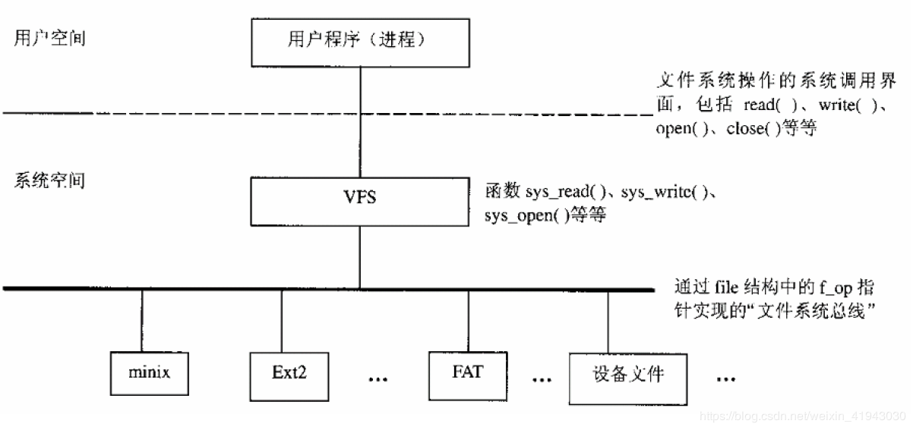
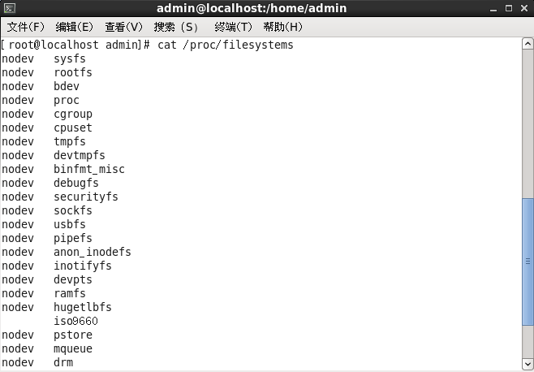

Linux kernel的VFS模块
计划写一个专题，专门记录linux kernel中VFS相关知识和学习点
引言
Linux中的一个很重要的模块，就是文件系统。而Linux应用场景广阔，从大量的嵌入式使用的NAND Flash、Norflash到服务器使用的磁盘等不同介质，所对应的不同的文件系统，如YAFFS、JFFS2、EXT2/3/4等众多的文件系统。不同的硬件介质，拥有不同的硬件属性和控制方法以及文件组织存储方式，那么对应的文件系统必然也是不同的，而上层应用程序使用的是标准的open、read、write、close等系统调用，这么多的文件系统是如何组织起来，对上层应用程序呈现出来一致性的呢？ 这个问题，可以从下面两个方面考虑：
- 对于Linux来说，一切皆文件。
- 从软件工程和软件哲学来考虑，没有什么问题是加一层解决不了。
对于Linux来说，一切皆文件。 对于Linux来说，一切皆文件。对于上层应用程序所看到的，也只是操作文件。所使用的的都是标准的系统调用，底层的所有文件系统的细节对其来说都是黑盒。事实上，上层应用程序既不愿意也没有能力看到下层文件系统或者硬件的差异。想象一下：世界上这么多的手机厂商，如果一个上层APP要适配所有的存储器件和构筑在其上的文件系统，那绝对是一个天量的工作量、并且也是质量和软件工程管理的灾难。所以，在Linux上，这些APP不需要看到底层差异，只需要看到自己操作的文件，这一点就够了，剩下的就交给Linux内核吧，他会搞定这个问题的。
从软件工程和软件哲学来考虑，没有什么问题是加一层解决不了。 上面说到上层APP搞不定的事情，Linux内核是怎么搞定的呢。这就是著名的软件哲学：没有什么问题是加一层解决不了的。如果有，那就再加一层。^_^
Linux内核加的这一层就是VFS。VFS（Virtual File Ssystem）从名字上就可以看出来，就是一个虚拟的，并不是一个真实的文件系统。对上，屏蔽所有的底层差异，提供统一的系统调用接口，呈现一致性；对下，提供一套标准框架和注册接口，让各种文件系统根据框架和标准进行实现，并让各种文件系统注册各种操作函数，实现真正的文件系统操作。总而言之，VFS就是夹在各种实现细节和标准化界面之间的夹心层，真正做到了吃的是草，挤出来的是奶。
文件系统总体框架
如上介绍，VFS就是夹在上层应用程序和下层不同文件系统中的夹心层，整体简单框架如下图：

相关文档
最权威的就是Kernel自带的文档啦。在Documentation/filesystems目录下，就有vfs.txt帮助文档。对VFS的介绍如下：
Introduction
============
The Virtual File System (also known as the Virtual Filesystem Switch) is the software layer in the kernel that provides the filesystem interface to userspace programs. It also provides an abstraction within the kernel which allows different filesystem implementations to coexist.
VFS system calls open(2), stat(2), read(2), write(2), chmod(2) and so on are called from a process context. Filesystem locking is described in the document Documentation/filesystems/Locking.
相关数据结构
- struct file_system_type
结构体定义在include/linux/fs.h头文件中，详细定义：
struct file_system_type {
const char *name; ----- 文件系统名字
int fs_flags; ----- TODO:标志位、暂时不知道干啥的，后续补上
#define FS_REQUIRES_DEV 1
#define FS_BINARY_MOUNTDATA 2
#define FS_HAS_SUBTYPE 4
#define FS_USERNS_MOUNT 8 /* Can be mounted by userns root */
#define FS_DISALLOW_NOTIFY_PERM 16 /* Disable fanotify permission events */
#define FS_RENAME_DOES_D_MOVE 32768 /* FS will handle d_move() during rename() internally. */
int (*init_fs_context)(struct fs_context *);
const struct fs_parameter_spec *parameters;
struct dentry *(*mount) (struct file_system_type *, int,
const char *, void *); ----- 具体文件系统的挂载函数钩子
void (*kill_sb) (struct super_block *); ---- TODO：应该是卸载函数钩子？
struct module *owner;
struct file_system_type * next; ----单链表，管理所有的文件系统
struct hlist_head fs_supers; ----TODO:不知道干啥的
struct lock_class_key s_lock_key; ---- TODO: 这一坨也不知道干啥的
struct lock_class_key s_umount_key;
struct lock_class_key s_vfs_rename_key;
struct lock_class_key s_writers_key[SB_FREEZE_LEVELS];
struct lock_class_key i_lock_key;
struct lock_class_key i_mutex_key;
struct lock_class_key i_mutex_dir_key;
};
Linux提供了/proc/filesystems接口，用于查看系统中已经注册的所有类型的文件系统。在我的CentOS虚拟机上，可以看到注册了如下的文件系统:
 有了file_system_type结构体的定义，我们就可以来看看一个文件系统类型是怎么添加到内核中的。
- int register_filesystem(struct file_system_type * fs)
/**
* register_filesystem - register a new filesystem
* @fs: the file system structure
*
* Adds the file system passed to the list of file systems the kernel
* is aware of for mount and other syscalls. Returns 0 on success,
* or a negative errno code on an error.
*
* The &struct file_system_type that is passed is linked into the kernel
* structures and must not be freed until the file system has been
* unregistered.
*/
int register_filesystem(struct file_system_type * fs)
{
int res = 0;
struct file_system_type ** p;
BUG_ON(strchr(fs->name, '.'));
if (fs->next)
return -EBUSY;
write_lock(&file_systems_lock);
p = find_filesystem(fs->name, strlen(fs->name));
if (*p)
res = -EBUSY;
else
*p = fs;
write_unlock(&file_systems_lock);
return res;
}
EXPORT_SYMBOL(register_filesystem);
函数定义在fs/filesystem.c文件中，代码很简单, 比如我们定义了一个名字叫bryan的文件系统类型，首先对入参的文件系统类型进行合法性校验，然后查找系统中bryan这个名字的文件系统类型是否已经注册，如果已经注册过了，就不需要也不可能再注册了，直接返回-EBUSY，反之将bryan这个文件系统类型添加到文件系统链表上，这个文件系统类型就成功了。
- int unregister_filesystem(struct file_system_type * fs)
/**
* unregister_filesystem - unregister a file system
* @fs: filesystem to unregister
*
* Remove a file system that was previously successfully registered
* with the kernel. An error is returned if the file system is not found.
* Zero is returned on a success.
*
* Once this function has returned the &struct file_system_type structure
* may be freed or reused.
*/
int unregister_filesystem(struct file_system_type * fs)
{
struct file_system_type ** tmp;
write_lock(&file_systems_lock);
tmp = &file_systems;
while (*tmp) {
if (fs == *tmp) {
*tmp = fs->next;
fs->next = NULL;
write_unlock(&file_systems_lock);
synchronize_rcu();
return 0;
}
tmp = &(*tmp)->next;
}
write_unlock(&file_systems_lock);
return -EINVAL;
}
EXPORT_SYMBOL(unregister_filesystem);
与register_filesystem相对应，就是将对应的文件系统类型从已经注册的列表中删除，内核无法再查找到这个文件系统类型，就自然的从内核中卸载了。
从上述的两个函数来看，还有如下几个点可以关注一下：
- find_filesystem函数
static struct file_system_type **find_filesystem(const char *name, unsigned len)
{
struct file_system_type **p;
for (p = &file_systems; *p; p = &(*p)->next)
if (strncmp((*p)->name, name, len) == 0 &&
!(*p)->name[len])
break;
return p;
}
这个函数就是遍历系统中的已经注册的文件系统类型，根据文件系统类型名字来做判断，确定是否已经注册。这个函数也定义在fs/filesystems.c文件中；
- file_systems变量
static struct file_system_type *file_systems;
这是一个全局static指针变量，指向的就是注册到系统中的第一个file_system_type对象，然后每个。其实上面的register_filesystem和unregister_filesystem函数，都是针对这个file_systems指向的链表进行操作的。register_filesystem就是将对象添加到链表中，unregister_filesystem就是将对象从链表中摘除。
- register_filesystem和unregister_filesystem的思考 虽然上面说的注册和解注册过程很简单，但是还是有一些事情值得注意和思考：
1) file_systems_lock这把锁是读写锁，就是只有注册和解注册的时候去写链表，其余的场景都是读，所以可以使用读写锁尽量提高系统响应。定义如下：
static DEFINE_RWLOCK(file_systems_lock);
2) register_filesystem时使用了find_filesystem查找系统中已经注册的文件系统类型，但unregister_filesystem时并没有使用find_filesystem去查找已经注册的文件系统类型，而是直接遍历。应该可以使用find_filesystem改写。更深层次，因为注册的时候使用的是name作为判断文件系统类型的唯一性，那么在解注册的时候使用find_filesystem去查找是否已经注册也是唯一的，逻辑上不会有问题。但是要考虑注册是在链表结尾添加对象，而解注册有可能在链表中部，使用find_filesystem函数逻辑会更复杂。
3) 在注册的时候会判断next指针是否为空，如果不为空的话会返回失败，这里的考虑很重要：防止了注册一个文件系统类型的时候在链表中加入随意不确定性，即不确定next指向的内存块。系统中注册的所有文件系统类型都是靠这个链表来维护，所以next绝对不可以出问题；所以解注册之后，也会将next指针赋值为NULL；
4) unregister_filesystem之后会调用synchronize_rcu，这个rcu同步在这个地方显得非常突兀，具体是什么作用呢？ 还是查看源码提交记录。最开始的提交是Nick Piggin在11年在31e6b01f4183ff419a6d1f86177cbf4662347cec这个commiter中添加的，然后在11年由Milton Milller在fff3e5ade4455a4b42a19c95dd7a167a3cb7956a这个提交中将synchronize_rcu从循环外添加到循环中。具体的原因如下可以查看这两个commit的注释，简而言之如下： 31e6b01f4183ff419a6d1f86177cbf4662347cec: 在解注册的时候仍可继续访问d_ops和i_ops； fff3e5ade4455a4b42a19c95dd7a167a3cb7956a: 在循环外不安全，将其添加到循环内部。这个点还不懂，给自己留个作业吧^_^
- struct file_operations